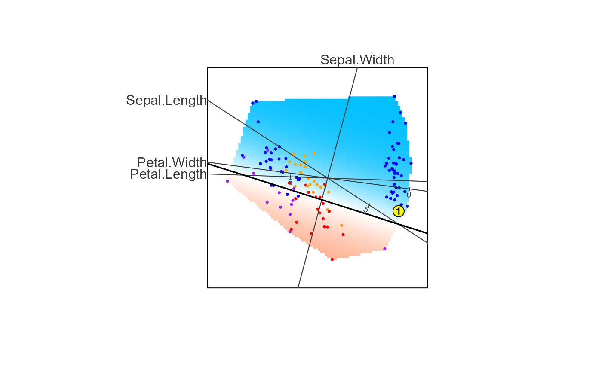

Plot the Phase 1 biplot with decision boundary
plot_biplotEZ.RdCreates a biplot visualisation of the Phase 1 result using the biplotEZ rendering pipeline. The plot shows:
Base axes — biplotEZ variable axes drawn as a canvas.
Coloured prediction grid — each grid point coloured blue (class 0) through white to red (class 1) by model probability.
Training data points — coloured by confusion category.
Variable axes redrawn on top — so axes are visible over the grid and points.
Decision boundary contour lines.
Optionally, a target observation highlighted in yellow.
Usage
plot_biplotEZ(
bl_result,
target_point = NULL,
target_label = NULL,
no_grid = FALSE,
no_points = FALSE,
no_contour = FALSE,
new_title = NA,
cex_z = 0.5,
label_dir = "Hor",
tick_label_cex = 0.6,
ticks_v = 1L,
which = NULL,
X_names = NULL,
label_offset_var = 0L,
label_offset_dist = 0.5,
contour_col = "black",
contour_lwd = 1.5,
contour_lty = 1L
)Arguments
- bl_result
A
"bl_result"object frombl_assemble().- target_point
Named numeric vector of feature values (in original X-space) for an observation to highlight. Names must match
bl_result$var_names. IfNULL(default), no target is plotted.- target_label
Character or integer label displayed inside the yellow target marker. If
NULLandtarget_pointis provided, the point is shown without a label.- no_grid
Logical; if
TRUE, the prediction grid is hidden. DefaultFALSE.- no_points
Logical; if
TRUE, training data points are hidden. DefaultFALSE.- no_contour
Logical; if
TRUE, decision boundary contour lines are hidden. DefaultFALSE.- new_title
Character; overrides the biplot title stored in
bl_result. UseNA(default) to keep the stored title.- cex_z
Numeric; size of training data points (
cex). Default0.5.- label_dir
Character; biplotEZ axis label direction.
"Hor"(horizontal, default) or"Rad"(radial).- tick_label_cex
Numeric; axis tick label size. Default
0.6.- ticks_v
Integer; number of ticks per variable axis. Default
1L.- which
Integer vector; indices of variables to draw axes for. Defaults to all variables.
- X_names
Character vector; custom variable names for axis labels. Defaults to
bl_result$var_names.- label_offset_var
Integer; index of the variable whose axis label should be shifted outward.
0(default) means no offset.- label_offset_dist
Numeric; outward offset distance for
label_offset_var. Default0.5.- contour_col
Character; colour for decision boundary contour lines. Default
"black".- contour_lwd
Numeric; line width for contour lines. Default
1.5.- contour_lty
Integer; line type for contour lines (1 = solid). Default
1L.
Point colour legend
- Red
True positive (actual = 1, predicted = 1).
- Blue
True negative (actual = 0, predicted = 0).
- Purple
False positive (actual = 0, predicted = 1).
- Orange
False negative (actual = 1, predicted = 0).
- Yellow
Target observation (if supplied).
Examples
bl_dat <- bl_prepare_data(datasets::iris, class_col = "Species",
target_class = "versicolor")
bl_mod <- bl_fit_model(bl_dat$train_data, bl_dat$var_names)
bl_proj <- bl_build_projection(bl_dat$train_data, bl_dat$var_names)
bl_grid <- bl_build_grid(bl_dat$train_data, bl_proj, bl_mod, m = 100L)
result <- bl_assemble(bl_dat, bl_model = bl_mod,
bl_projection = bl_proj, bl_grid = bl_grid)
plot_biplotEZ(result)
#>
#> --- Prediction summary ---
#> Points plotted : 120
#> Predicted 1 : 32 (26.7 %)
#> Predicted 0 : 88 (73.3 %)
#> Accuracy : 85 / 120 (70.8 %)
#> TP / TN / FP / FN : 19 / 66 / 13 / 22
#> --------------------------
# Highlight a target observation
target <- unlist(result$test_data[1, result$var_names])
plot_biplotEZ(result, target_point = target, target_label = 1)

#>
#> --- Prediction summary ---
#> Points plotted : 120
#> Predicted 1 : 32 (26.7 %)
#> Predicted 0 : 88 (73.3 %)
#> Accuracy : 85 / 120 (70.8 %)
#> TP / TN / FP / FN : 19 / 66 / 13 / 22
#> --------------------------